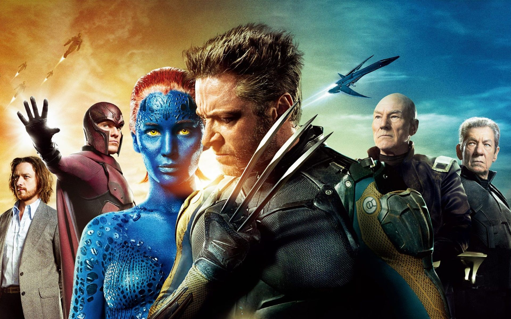
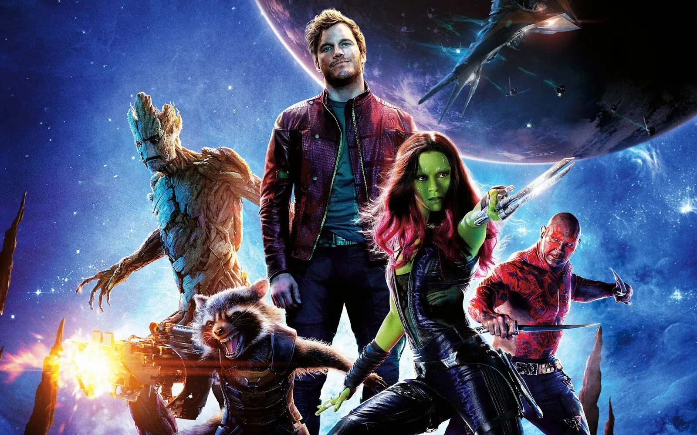

Este é o seu portal definitivo para explorar todas as maravilhas do mundo geek Aqui, mergulharemos profundamente nas paixões que nos movem: desde filmes, jogos eletrônicos e livros empolgantes e maravilhosos.Junte-se a nós enquanto celebramos a criatividade, a imaginação e a paixão que tornam o mundo geek verdadeiramente extraordinário. Seja você um veterano geek ou apenas esteja começando sua jornada, há sempre algo aqui para todos. Explore, compartilhe e divirta-se !